MCP Tool Cookbook
This cookbook provides examples of how to use the mcp tool to query and understand your Python codebase. The "Tool" indicates which mcp tool to use, and the "JSON Arguments" are what the LLM would provide to that tool.
Basic Queries
1. Find a specific function by name
- Natural Language: "Where is the function
foodefined?" - Tool:
find_code - JSON Arguments:
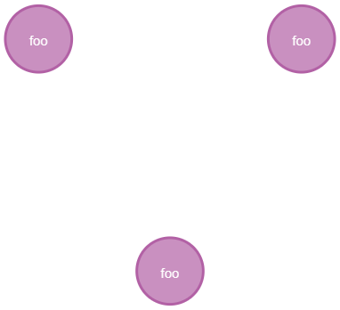
2. Find all calls to a specific function
- Natural Language: "Find all calls to the
helperfunction." - Tool:
analyze_code_relationships - JSON Arguments:
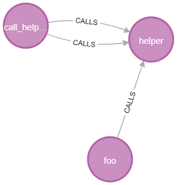
3. Find what a function calls
- Natural Language: "What functions are called inside the
foofunction?" - Tool:
analyze_code_relationships - JSON Arguments:
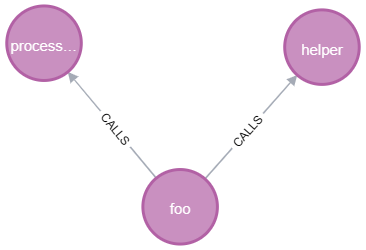
4. Find all imports of a specific module
- Natural Language: "Where is the
mathmodule imported?" - Tool:
analyze_code_relationships - JSON Arguments:
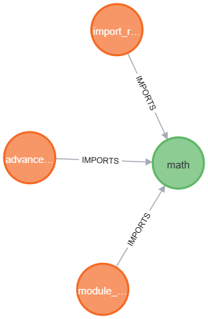
5. Find all methods of a class
- Natural Language: "What are the methods of the
Aclass?" - Tool:
analyze_code_relationships - JSON Arguments:
- Note: The response for
class_hierarchyincludes a list of methods.
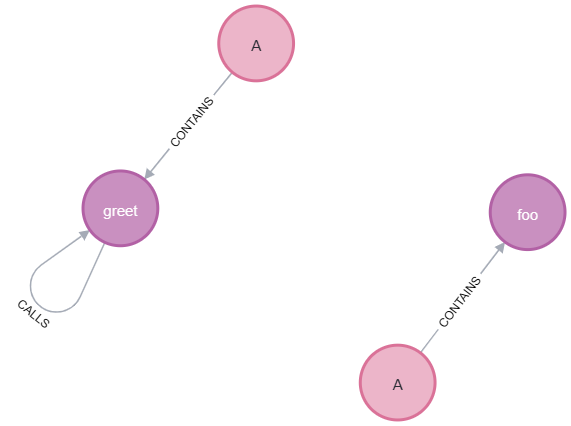
6. Find all classes that inherit from a specific class
- Natural Language: "Show me all classes that inherit from
Base." - Tool:
analyze_code_relationships - JSON Arguments:
- Note: The response for
class_hierarchyincludes a list of child classes.
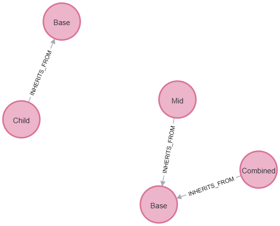
7. Find all functions with a specific decorator
- Natural Language: "Find all functions with the
log_decorator." - Tool:
analyze_code_relationships - JSON Arguments:
8. Find all dataclasses
- Natural Language: "Find all dataclasses."
- Tool:
execute_cypher_query - JSON Arguments:
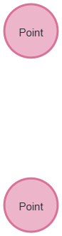
Code Analysis & Quality
9. Find the 5 most complex functions
- Natural Language: "Find the 5 most complex functions."
- Tool:
find_most_complex_functions - JSON Arguments:
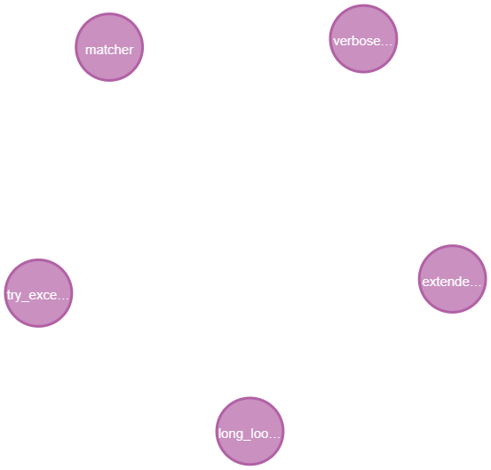
10. Calculate cyclomatic complexity of a function
- Natural Language: "What is the cyclomatic complexity of
try_except_finally?" - Tool:
calculate_cyclomatic_complexity - JSON Arguments:
11. Find unused code
- Natural Language: "Find unused code, but ignore API endpoints decorated with
@app.route." - Tool:
find_dead_code - JSON Arguments:
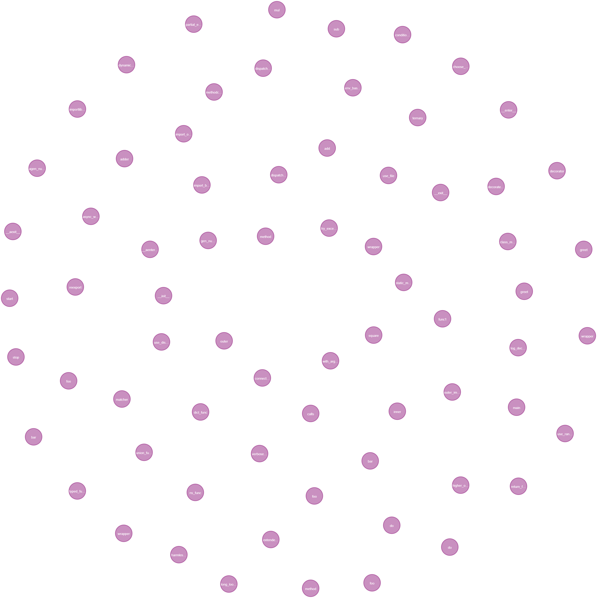
12. Find the call chain between two functions
- Natural Language: "What is the call chain from
wrappertohelper?" - Tool:
analyze_code_relationships - JSON Arguments:
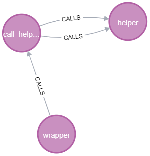
13. Find all direct and indirect callers of a function
- Natural Language: "Show me all functions that eventually call the
helperfunction." - Tool:
analyze_code_relationships - JSON Arguments:
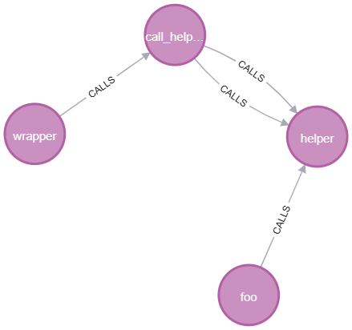
14. Find functions by argument name
- Natural Language: "Find all functions that take
selfas an argument." - Tool:
analyze_code_relationships - JSON Arguments:
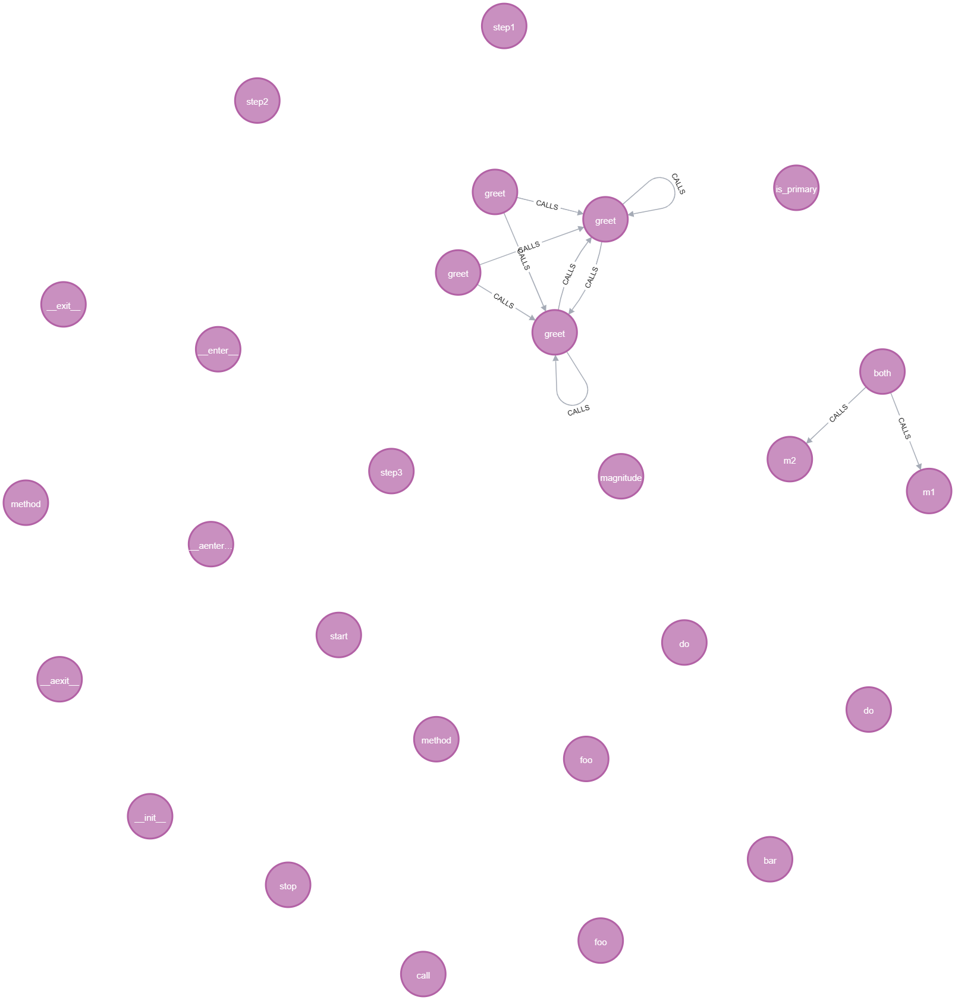
15. List all python package imports from a directory
- Natural Language: "List all python package imports from my project directory."
- Tool:
execute_cypher_query - JSON Arguments:
Repository Information Queries
16. List all indexed projects
- Natural Language: "List all projects I have indexed."
- Tool:
list_indexed_repositories - JSON Arguments:
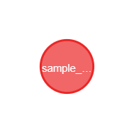
17. Check the status of an indexing job
- Natural Language: "What is the status of job
4cb9a60e-c1b1-43a7-9c94-c840771506bc?" - Tool:
check_job_status - JSON Arguments:
18. List all background jobs
- Natural Language: "Show me all background jobs."
- Tool:
list_jobs - JSON Arguments:
Advanced Cypher Queries
These examples use the execute_cypher_query tool for more specific and complex questions.
19. Find all function definitions
- Natural Language: "Find all function definitions in the codebase."
- JSON Arguments:
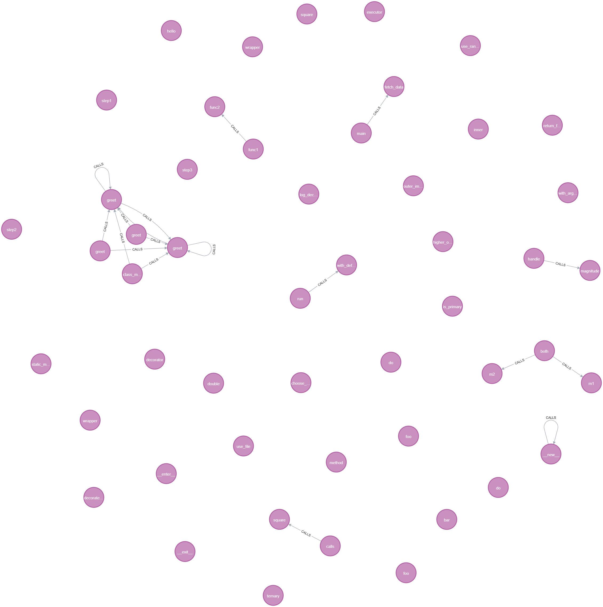
20. Find all classes
- Natural Language: "Show me all the classes."
- JSON Arguments:
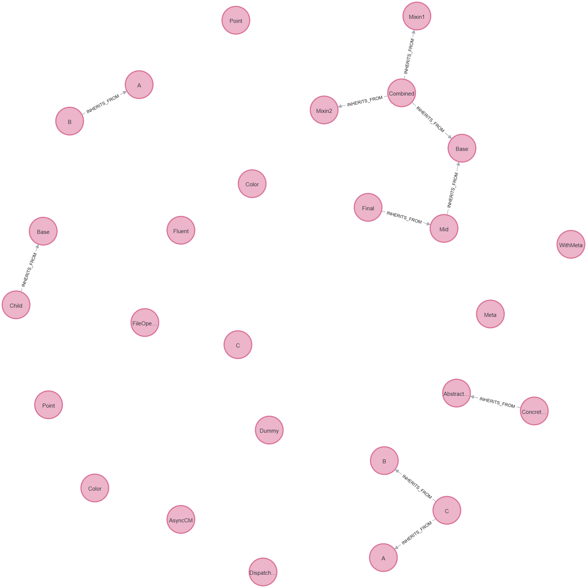
21. Find all functions in a file
- Natural Language: "Find all functions in
module_a.py." - JSON Arguments:
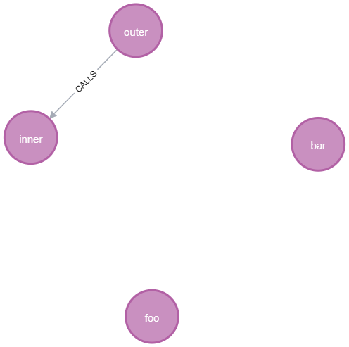
22. Find all classes in a file
- Natural Language: "Find all classes in
advanced_classes.py." - JSON Arguments:
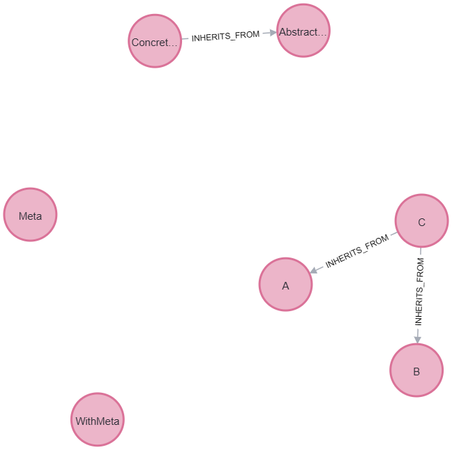
23. List all top-level functions and classes in a file
- Natural Language: "List all top-level functions and classes in
module_a.py." - JSON Arguments:
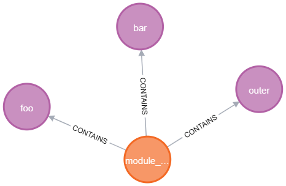
24. Find functions in one module that call a function in another
- Natural Language: "Find functions in
module_a.pythat callhelperinmodule_b.py." - JSON Arguments:
25. Find circular file imports
- Natural Language: "Are there any circular dependencies between files?"
- JSON Arguments:
26. Find all functions with more than 5 arguments
- Natural Language: "Find all functions with a large number of arguments."
- JSON Arguments:
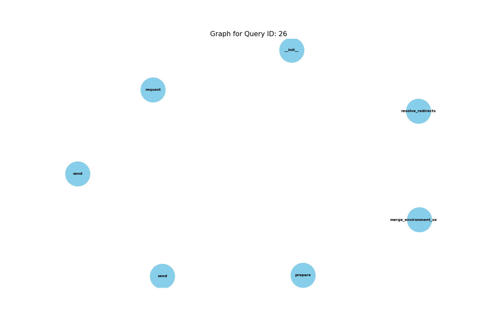
27. Find all functions in a file that have a docstring
- Natural Language: "Find all functions in
module_a.pythat have a docstring." - JSON Arguments:
28. Find all classes that have a specific method
- Natural Language: "Find all classes that have a
greetmethod." - JSON Arguments:
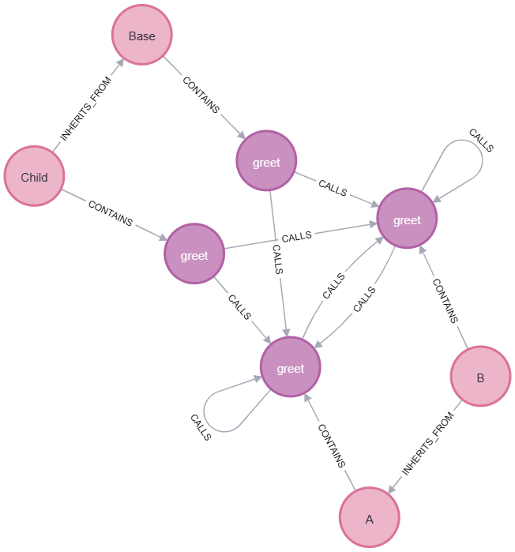
29. Find the depth of inheritance for all classes
- Natural Language: "How deep are the inheritance chains for all classes?"
- JSON Arguments:
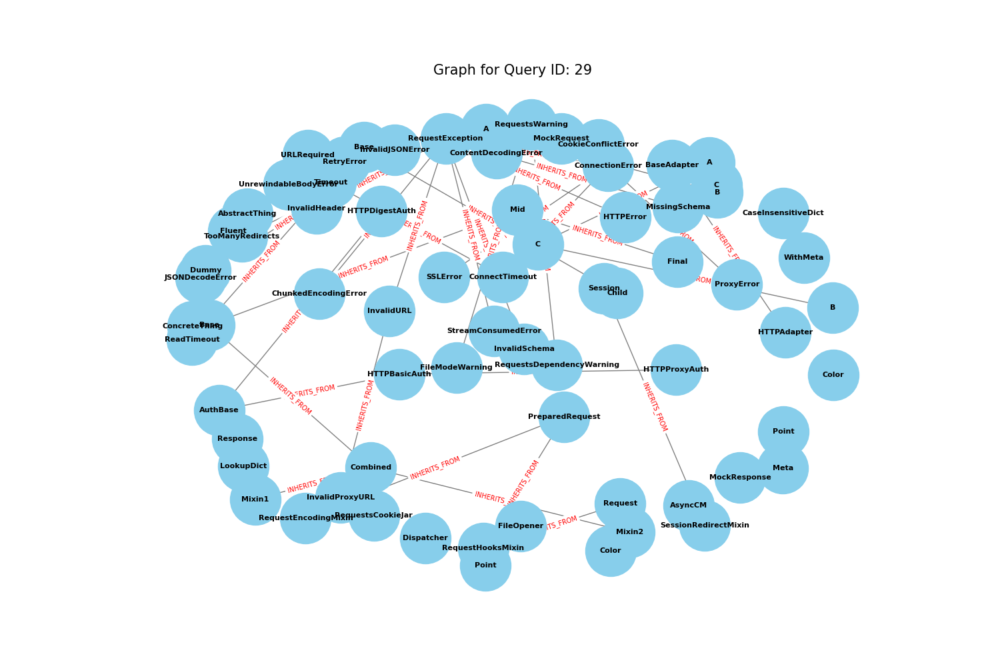
30. Find all functions that have a docstring
- Natural Language: "Show me all functions that are documented."
- JSON Arguments:
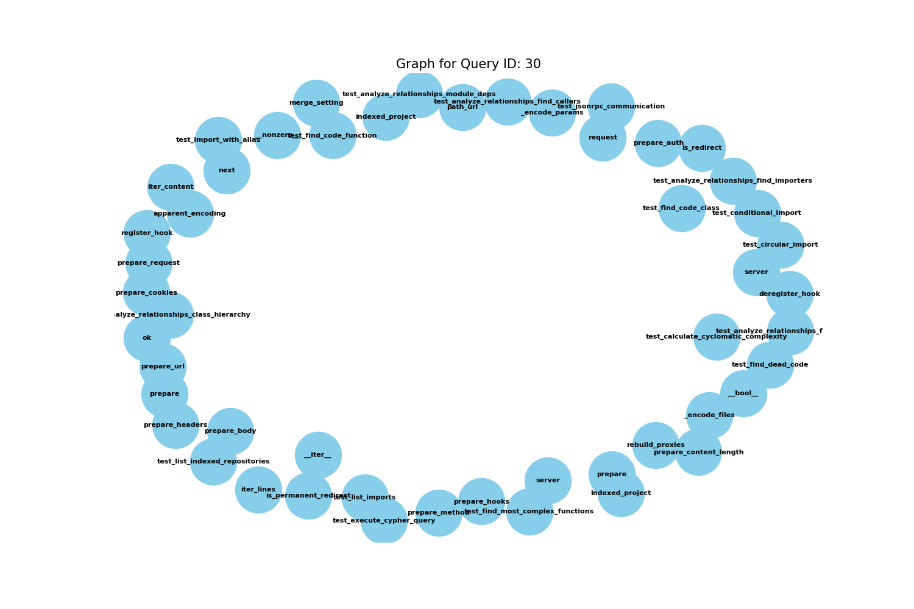
31. Find all decorated methods in a class
- Natural Language: "Find all decorated methods in the
Childclass." - JSON Arguments:
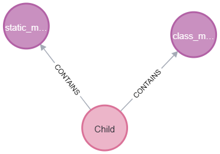
32. Find the number of functions in each file
- Natural Language: "How many functions are in each file?"
- JSON Arguments:
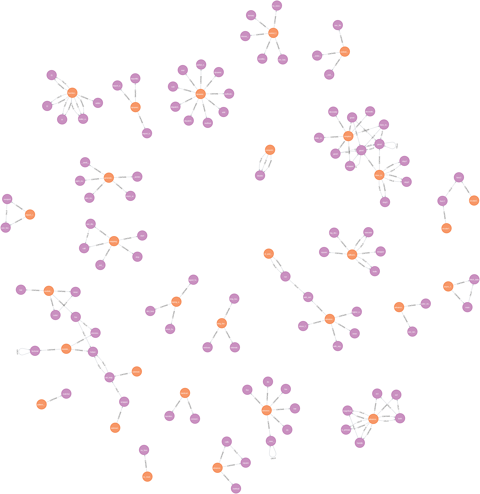
33. Find all methods that override a parent method
- Natural Language: "Find all methods that are overridden from a parent class."
- JSON Arguments:
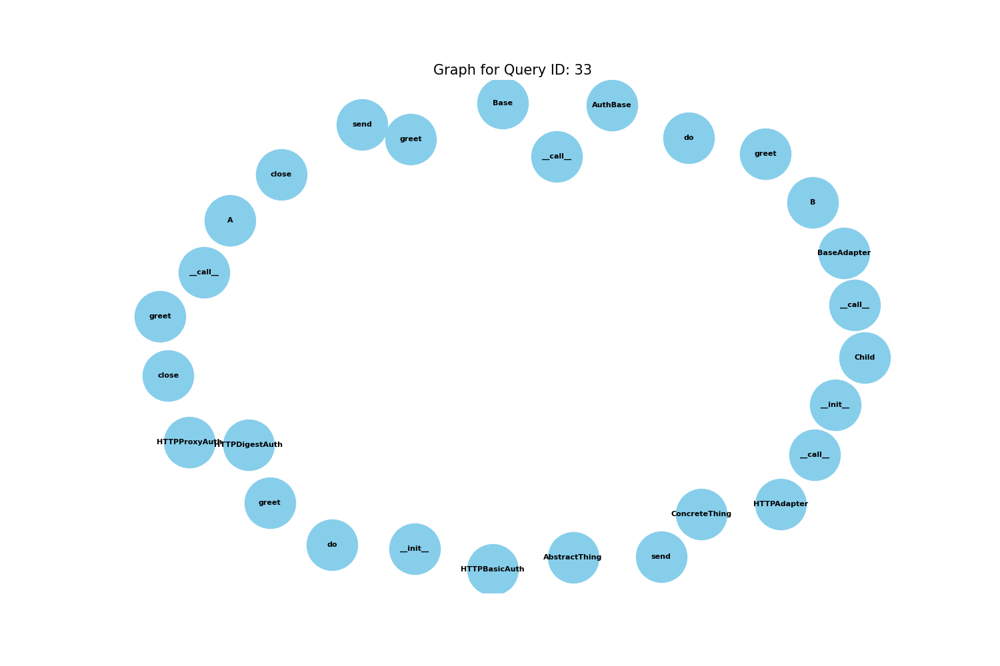
34. Find all functions that call super()
- Natural Language: "Find all methods that call their parent's method via
super()." - JSON Arguments:
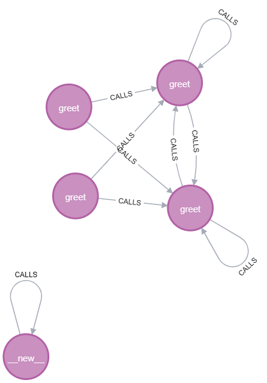
35. Find all calls to a function with a specific argument
- Natural Language: "Find all calls to
helperwith the argumentx." - JSON Arguments:
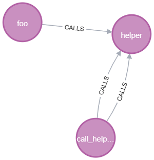
36. Find all functions that are not called by any other function
- Natural Language: "Find all dead code (functions that are never called)."
- JSON Arguments:

37. Find all functions that are called with a specific argument
- Natural Language: "Find all calls to
printwith the argument'hello'." - JSON Arguments:
38. Find all direct and indirect callees of a function
- Natural Language: "Show me all functions that are eventually called by the
foofunction." - Tool:
analyze_code_relationships - JSON Arguments:
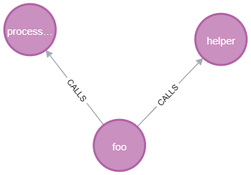
39. Find all functions that are overridden
- Natural Language: "Find all functions that are overridden."
- Tool:
analyze_code_relationships - JSON Arguments:
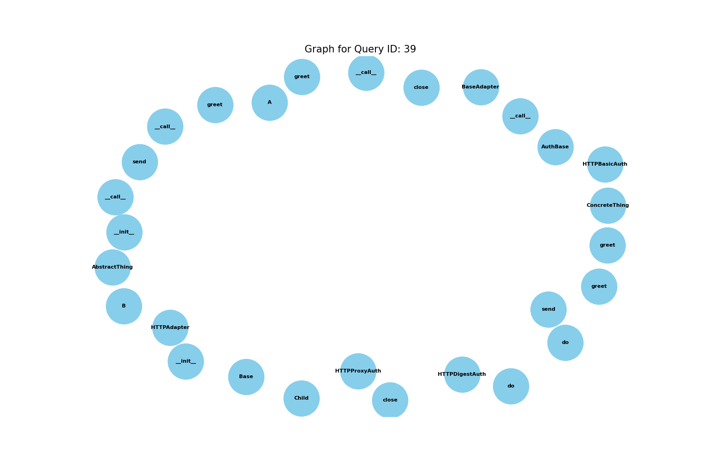
40. Find all modules imported by module_a
- Natural Language: "Find all modules imported by
module_a." - Tool:
execute_cypher_query - JSON Arguments:
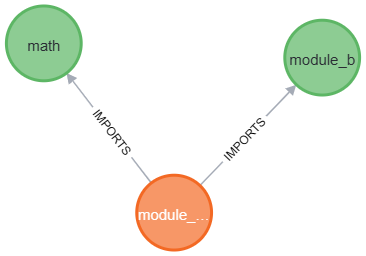
41. Find large functions that should be refactored
- Natural Language: "Find functions with more than 20 lines of code that might need refactoring."
- Tool:
execute_cypher_query - JSON Arguments:
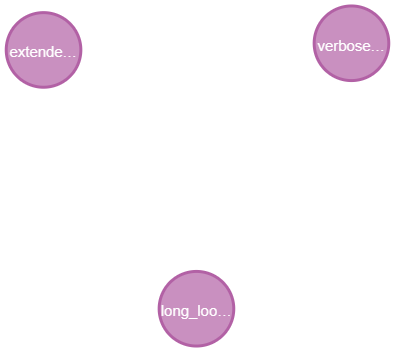
42. Find recursive functions
- Natural Language: "Find all functions that call themselves (recursive functions)."
- Tool:
execute_cypher_query - JSON Arguments:
{ "cypher_query": "MATCH p=(f:Function)-[:CALLS]->(f2:Function)\n WHERE f.name = f2.name AND f.path = f2.path\n RETURN p" }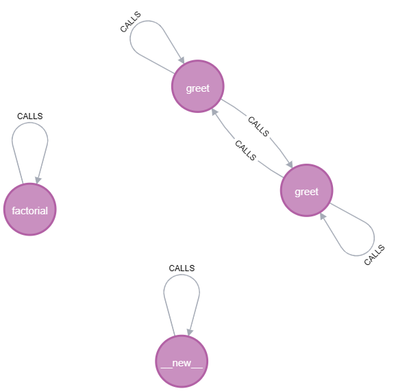
43. Find most connected functions (hub functions)
- Natural Language: "Find the functions that are most central to the codebase (called by many and call many others)."
- Tool:
execute_cypher_query - JSON Arguments:
{ "cypher_query": "MATCH (f:Function)\n OPTIONAL MATCH (f)-[:CALLS]->(callee:Function)\n OPTIONAL MATCH (caller:Function)-[:CALLS]->(f)\n WITH f, count(DISTINCT callee) AS calls_out, count(DISTINCT caller) AS calls_in\n ORDER BY (calls_out + calls_in) DESC\n LIMIT 5\n MATCH p=(f)-[*0..2]-()\n RETURN p" }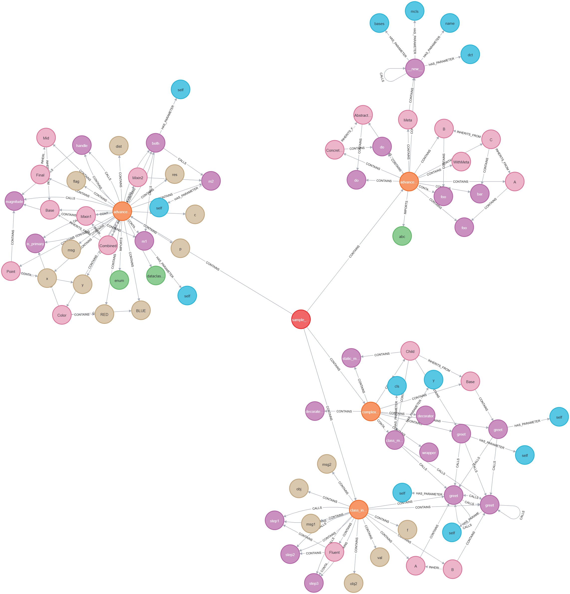
Security & Sensitive Data Analysis
44. Find potential security vulnerabilities (hardcoded secrets)
- Natural Language: "Find potential hardcoded passwords, API keys, or secrets in the codebase."
- Tool:
execute_cypher_query - JSON Arguments: